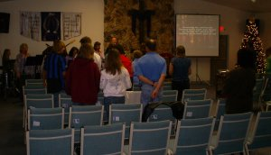

 Quartz Hill Community Church is a cozy, comfortable church. Our focus is on people, plain and simple. We have a friendly and accepting church and maintain an honest and open atmosphere. Our mission is to be a church for those who do not fit in elsewhere. If any of these qualities are things that you are looking for in a church, Quartz Hill Community waits for you with open arms.
To make it easier we want to introduce ourselves to you. We started by making some videos of us. These impromptu videos taken on a small camera are some real glimpses into who we are. You can look at the videos here.
We also wanted to introduce ourselves to those in our community who have not yet seen our website. For our low-tech introduction we made a flier that summarizes some of the video material and tells people about us. You can see our flier here.
You can get a more in-depth look at who we are by exploring our website. Use the links in the bars at the top and the bottom of each page to guide you.
Finally some of our members maintain blogs. Feeds from their blogs are below. The tabs show each person who has a blog. Click on a tab to see recent blog entries. Feel free to visit and comment.